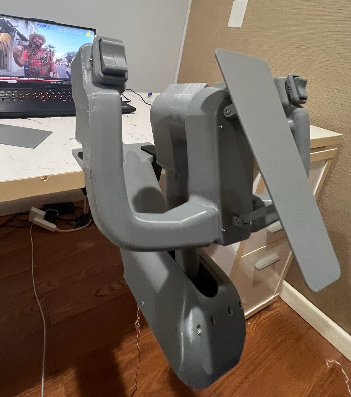
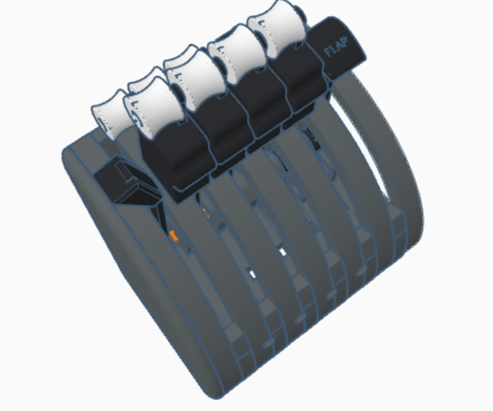
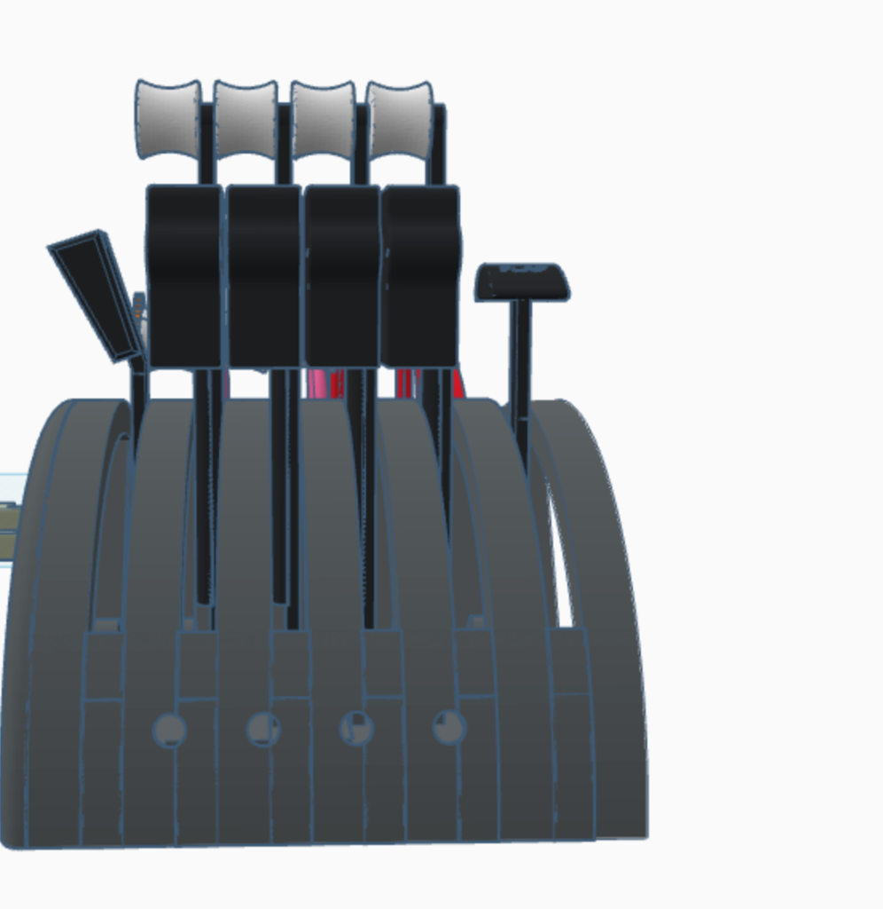
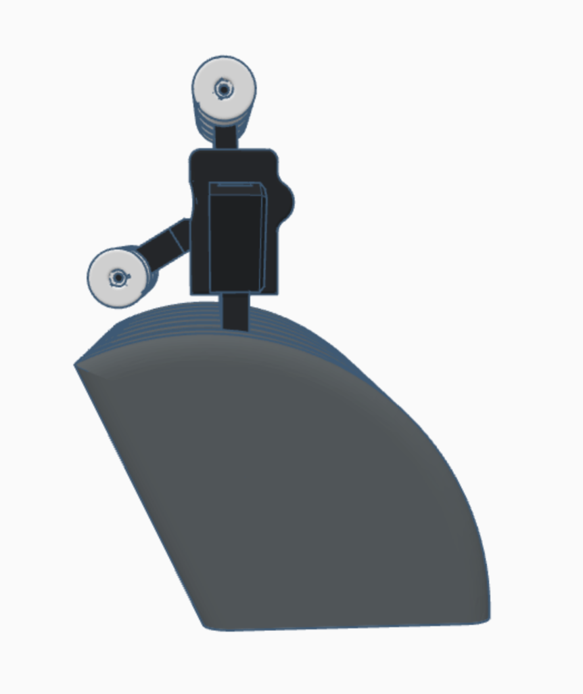

3D-Printed Flight Controls
Custom 3D-printed flight simulator hardware: a dual-axis flight yoke featuring a base-tilting column for pitch, center-hub wheel rotation for roll, and contactless Hall effect sensors—paired with a 4-engine airliner throttle quadrant with dual white spool rollers, speedbrake lever, and embossed FLAP lever.
Dual-Axis Flight Yoke
Base-Tilting Pitch & Wheel Roll4-Section Throttle Quadrant
Airliner Lever Rack & Potentiometers
Fully assembled flight yoke mounted to desk, featuring base-tilting pitch column, center-hub roll, dual thumb rockers, integrated front preflight checklist, and contactless Hall effect sensors.

Top-angled CAD view showing the curved ribbed housing, 4 central throttle levers with dual white concave spool rollers, left speedbrake lever, and right embossed “FLAP” lever.

Front elevation showing the four aligned black throttle bodies, white concave top spool knobs, parallel quadrant slots, and lower potentiometer bores.

Side profile highlighting the curved quadrant arc, ergonomic finger contour on the black throttle block, top white throttle spool, and forward reverse-thrust spool.